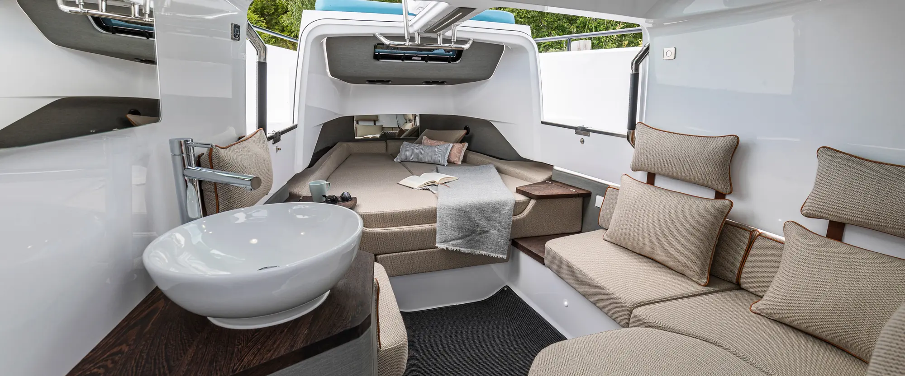
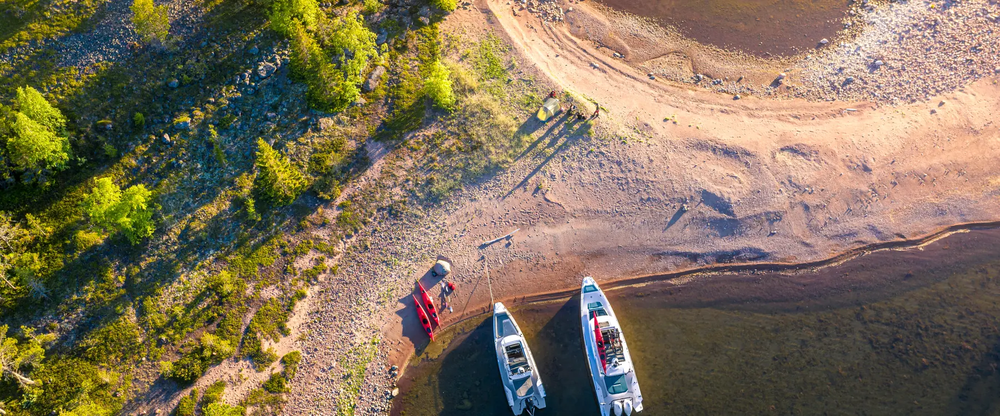
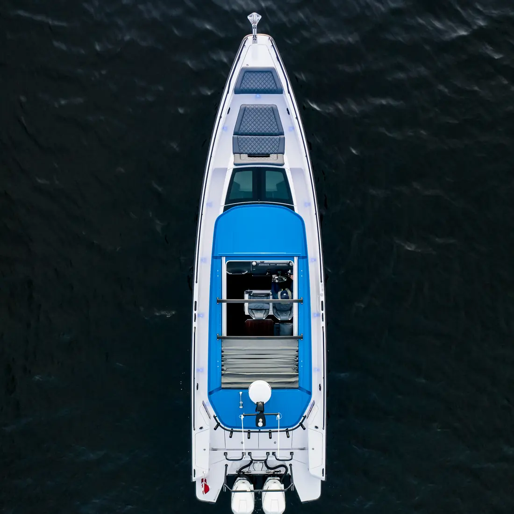
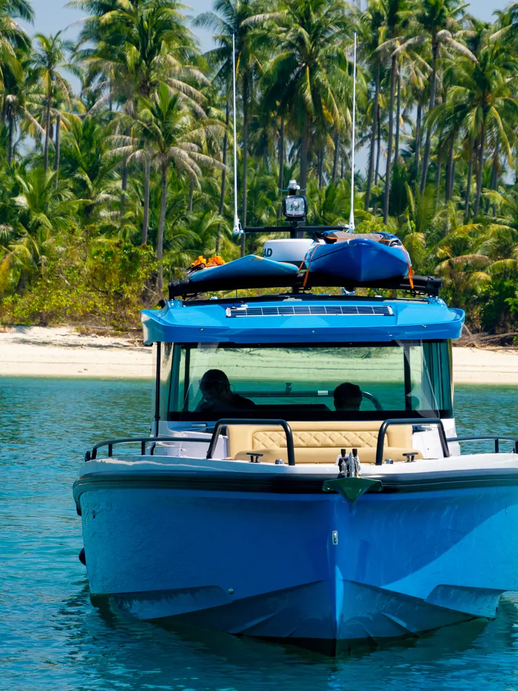
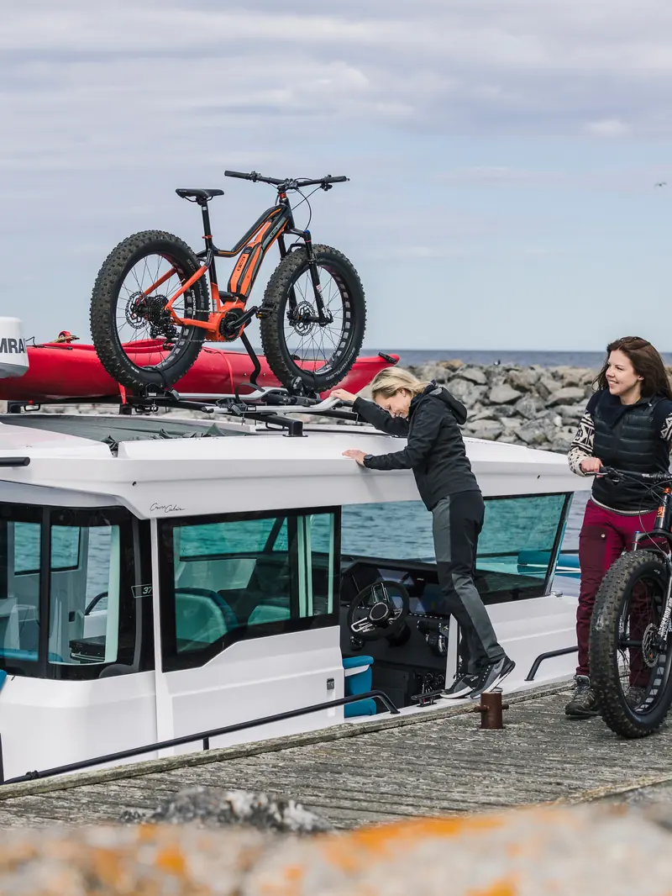
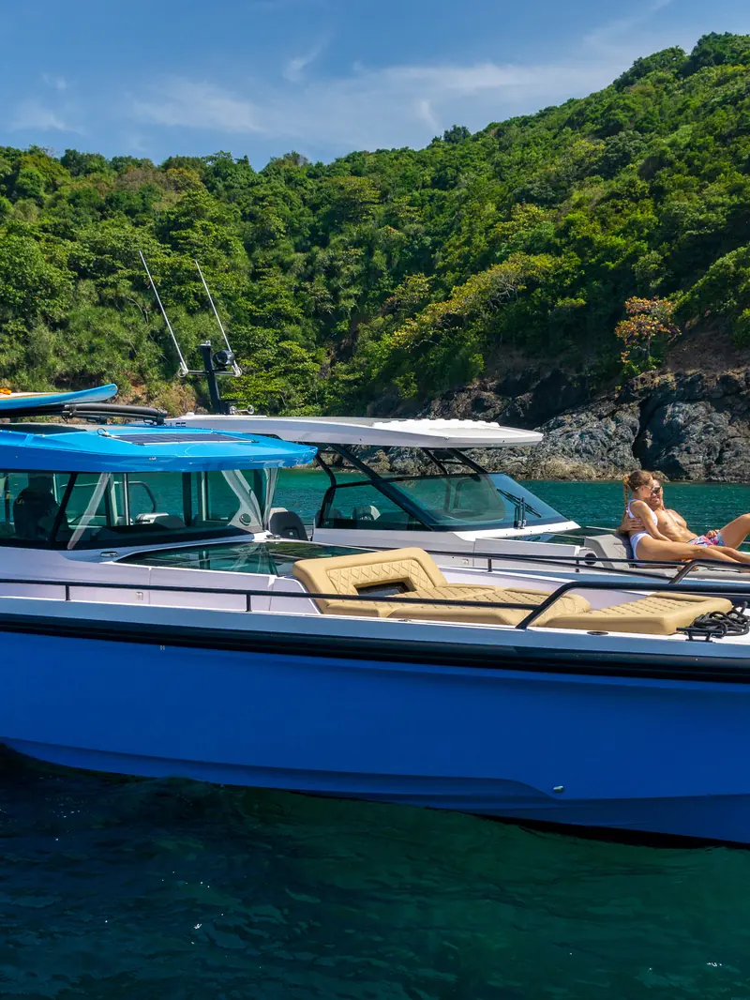
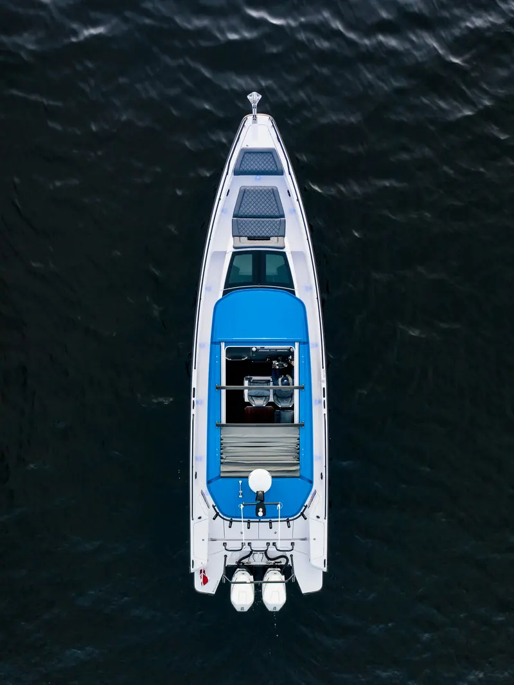
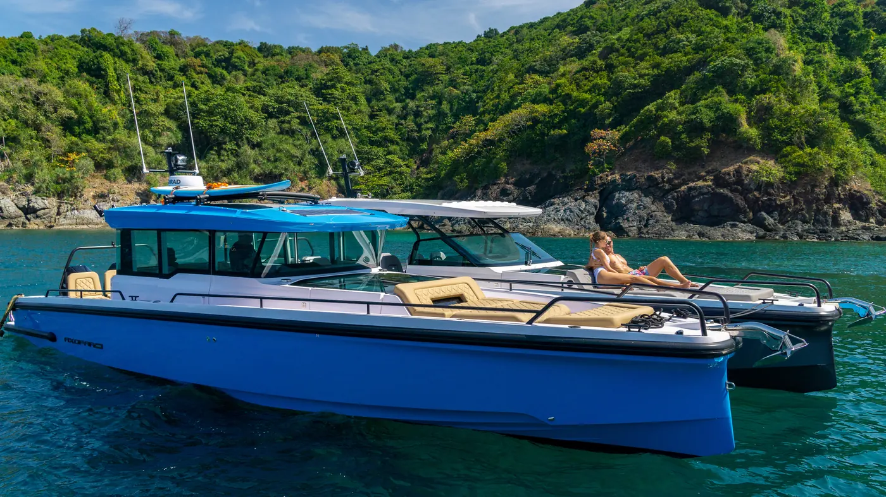

Casco de doble step
Dos escalones despegan parte del casco del agua. Menos superficie mojada: planea antes, consume menos y se mantiene estable. En la práctica, más autonomía y un barco que sale seguido porque usarlo no cuesta una fortuna.

Representación oficial en Chile
Diseñados donde
el mar no perdona.
Un astillero finlandés que rediseñó lo que puede hacer un barco a motor. Casco de doble step, cabina cerrada y la eficiencia suficiente para usarlo todo el año.
Finlandia tiene cuarenta mil islas y un mar que se pone feo en veinte minutos. Ahí nació Axopar el 2014, con una pregunta incómoda: por qué un barco a motor tiene que ser lento, pesado y caro de usar.
La respuesta fue un casco angosto con dos escalones en el fondo. Planea antes, consume menos y se mantiene estable con mar formado. Lo que en el Báltico significa llegar seco, en Chile significa salir más veces al año.
Diez años después, Axopar exporta a treinta mercados y define una categoría que antes no existía: barcos rápidos que se usan de verdad, no que esperan el fin de semana perfecto.


Dos escalones despegan parte del casco del agua. Menos superficie mojada: planea antes, consume menos y se mantiene estable. En la práctica, más autonomía y un barco que sale seguido porque usarlo no cuesta una fortuna.
Corta la ola en vez de golpearla. Mantienes velocidad de crucero con mar de un metro sin castigar a nadie a bordo. Llegas antes, y llegas entero.
El mismo casco admite techo abierto, cabina cerrada o versión de pernocta. Eliges cómo navegas, no qué barco te toca.
Construcción sándwich. Peso contenido para un 37 pies: necesita menos potencia para el mismo rendimiento, y eso son menos motivos para dejarlo amarrado.
Cuatro familias sobre la misma lógica de casco. La diferencia está en cómo navegas, no en cuánto barco quieres.

El punto de entrada. Transportable en carro y suficiente barco para el día completo.
7,6 m · 1 × 300 hp USD 145.000*
Cabina cerrada en nueve metros. Manejable, remolcable y usable fuera de temporada.
9,2 m · 1 × 350 hp USD 195.000*
El barco que define la categoría. Timonera climatizada y autonomía para travesías reales.
11,5 m · 2 × 300 hp USD 385.000*
Mismo casco, techo abierto. Para quien navega en temporada y quiere el sol encima.
11,5 m · 2 × 300 hp USD 355.000*El tope de gama. Dos camarotes reales y autonomía para semanas fuera.
13,9 m · 2 × 450 hp USD 620.000*Cubierta despejada, sin parabrisas. El más directo de toda la gama.
7,6 m · 1 × 300 hp USD 165.000*No hay modelos de esa familia en la gama actual.
* Valor referencial de entrada. El precio final depende de motorización, equipamiento e importación. Lo vemos contigo.

Un barco importado se compra una vez y se usa quince años. Por eso no representamos cualquier astillero: elegimos los que resuelven bien el problema del uso real, no los que se ven bien en el muelle.
Axopar entra en el portafolio porque su ingeniería responde a un mar difícil, y el nuestro lo es. Los fiordos y canales del sur piden calado bajo, cabina cerrada y autonomía. Es exactamente lo que este astillero hace mejor.
Especificamos cada barco contigo antes de pedirlo, seguimos la fabricación en Finlandia y lo entregamos nacionalizado y en el agua.

Cuatro familias, del 25 al 45. La conversación de veinte minutos ahorra meses de duda.